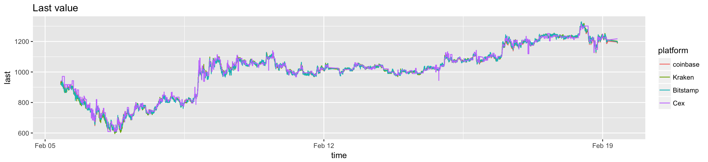
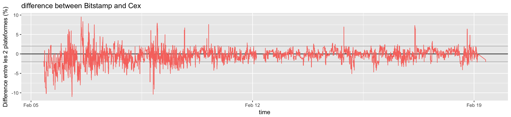
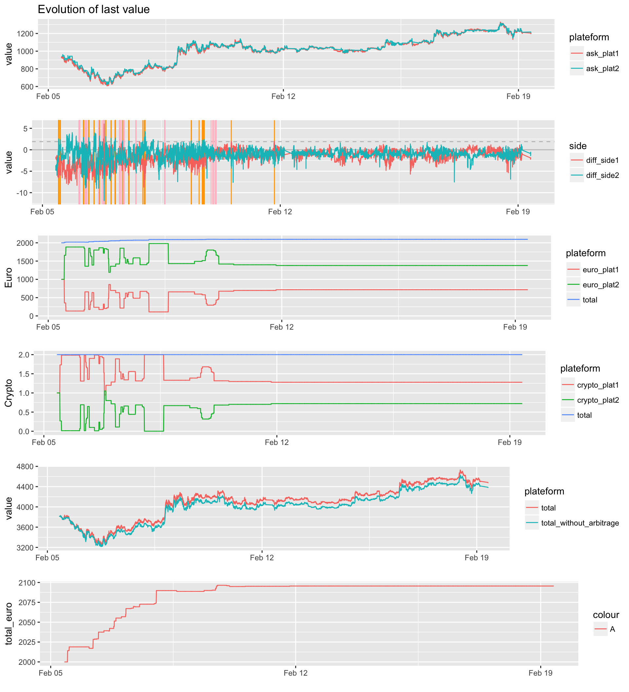
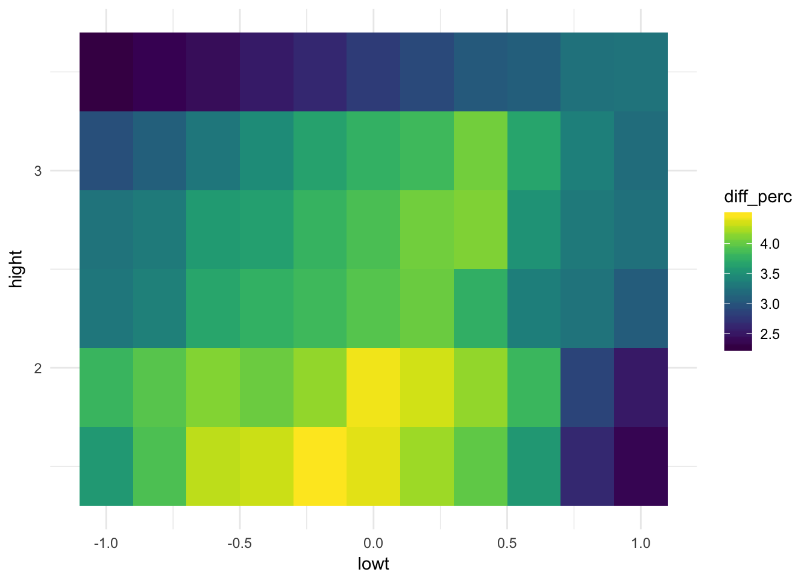
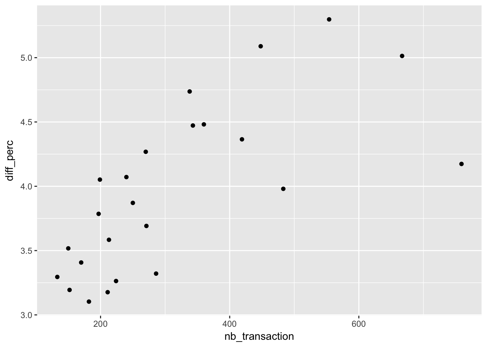

This document simulates the creation of a cryptocurrency arbitrage bot. The algorithm is created and described. It is then run on an historical dataset. Parameters optimization is finally performed.
library(tidyverse)
library(rmarkdown) # You need this library to run this template.
library(epuRate) # Install with devtools: install_github("holtzy/epuRate", force=TRUE)
library(DT)
library(plotly)
library(hrbrthemes)
library(lubridate)This document is based on a dataset described here and available here. We will use the price of bitcoin cash (BCH) between bitstamp and Cex, since we saw that it is here that the best arbitrage opportunities exist.
# Load result
load("DATA/public_ticker_harvest.Rdata")
Ticker= head(Ticker, 300000)Clean and reformat the ticker
# Choose 2 exchanges
plat1 <- "Bitstamp"
plat2 <- "Cex"
# Keep the 2 plateform only
data <- Ticker %>%
filter(symbol=="BCHEUR") %>%
filter(platform %in% c(plat1, plat2)) %>%
select(time, platform, symbol, ask, bid) %>%
mutate(ask=as.numeric(ask), bid=as.numeric(bid)) %>%
gather(temp, value, -time, -platform, -symbol) %>%
mutate(platform=gsub(plat1,"plat1", platform)) %>%
mutate(platform=gsub(plat2,"plat2", platform)) %>%
unite(temp1, platform, temp, sep="_") %>%
spread( key=temp1, value=value) %>%
mutate(
diff1=(plat1_bid-plat2_ask)/plat1_bid*100,
diff2=(plat2_bid-plat1_ask)/plat2_bid*100
) %>%
na.omit()This plot describe the evolution of the BitcoinCash (BTC) for our 2 platforms.
ticker_evolution <- Ticker %>%
mutate(last=as.numeric(last)) %>%
filter(symbol=="BCHEUR") %>%
ggplot( aes(x=time, y=last, color=platform, group=platform)) +
geom_line() +
#ylim(5500, 6400) +
ggtitle("Last value")
ticker_evolution
And the difference in % between both platform? (= red - blue curve)
tmp=Ticker %>%
mutate(last=as.numeric(last)) %>%
filter(symbol=="BCHEUR") %>%
select(time, platform, last) %>%
spread(key=platform, value=last)
tmp$mydiff=tmp[,plat1]-tmp[,plat2]
tmp$mydiff_perc=tmp$mydiff/ apply(tmp[,c(2,3)],1,mean) *100
difference=ggplot( data=tmp, aes(x=time, y=mydiff_perc, color="diff")) +
geom_abline(slope=0, intercept=0) +
geom_abline(slope=0, intercept=2, color="grey") +
geom_abline(slope=0, intercept=-2, color="grey") +
geom_line() +
ylab("Difference entre les 2 plateformes (%)") +
ggtitle(paste("difference between ", plat1, " and ", plat2, sep="")) +
theme(legend.position="none")
difference
This is a function that run an arbitrage algo on my data. Several parameters have to be given. Here is what it does step by step:
#data=data
#thres=2
#thres_rebalance=1
#euro_to_trade=5
#initial_value=100
#fee=0.25
run_arbitrage_algo=function(data, thres, thres_rebalance, euro_to_trade, initial_value, fee){
# Get platform1 balance:
init_crypto_plat1 = initial_value / 1000
init_euro_plat1 = initial_value
# Get platform2 balance:
init_crypto_plat2 = initial_value / 1000
init_euro_plat2 = initial_value
# Initialize outputs. I will have one line per iteration of the loop. If I do a transaction , some column will be filled with the appropriate information.
bilan=as.data.frame(matrix(NA, nrow(data), 22))
names(bilan) = c(
"time", "ask_plat1", "bid_plat1", "ask_plat2", "bid_plat2", "diff_side1", "diff_side2", "transaction", "rebalance",
"thres", "thres_rebalance", "euro_to_trade", "crypto_to_trade",
"euro_plat1", "crypto_plat1", "euro_plat2", "crypto_plat2",
"total_euro", "total_crypto", "total", "total_without_arbitrage", "id"
)
# What I have at the beginning
current_crypto_plat1=init_crypto_plat1
current_crypto_plat2=init_crypto_plat2
current_euro_plat1=init_euro_plat1
current_euro_plat2=init_euro_plat2
# Start the loop
num=0
for( i in c(1:nrow(data)) ){
num=num+1
# ---- Step1: recover price of both platforms
ask_plat1 = data$plat1_ask[i]
bid_plat1 = data$plat1_bid[i]
ask_plat2 = data$plat2_ask[i]
bid_plat2 = data$plat2_bid[i]
# ---- Step2: calculate difference between both plateform? Side1 = platform1 is more expensive. So I buy on plat2 and sell on plat1
diff_side1 = (bid_plat1 - ask_plat2) / mean( c(bid_plat1,ask_plat2) ) * 100
diff_side2 = (bid_plat2 - ask_plat1) / mean( c(bid_plat2,ask_plat1) ) * 100
# ---- Step3: calcule the equivalence crypto / euro --> we need that to trade the good amount
crypto_to_trade <- euro_to_trade / min(bid_plat1, bid_plat2)
# ---- Step4: Is there a significant difference + have I the money to make a transaction?
trade_side1 = diff_side1 > thres & current_crypto_plat1>crypto_to_trade & current_euro_plat2>euro_to_trade
trade_side2 = diff_side2 > thres & current_crypto_plat2>crypto_to_trade & current_euro_plat1>euro_to_trade
# I can also make a transaction to rebalance my fundings! If I have less than one third of the crypto in a plateform, I re-balance
tot_crypto = current_crypto_plat1 + current_crypto_plat2
rebalance_side1 = current_crypto_plat2<tot_crypto/3 & diff_side1 > thres_rebalance & current_crypto_plat1>crypto_to_trade & current_euro_plat2>euro_to_trade
rebalance_side2 = current_crypto_plat1<tot_crypto/3 & diff_side2 > thres_rebalance & current_crypto_plat2>crypto_to_trade & current_euro_plat1>euro_to_trade
if( trade_side1==TRUE | trade_side2==TRUE | rebalance_side1==TRUE | rebalance_side2==TRUE ){
transaction="yes"
if( rebalance_side1==TRUE | rebalance_side2==TRUE ){ rebalance="yes" }
# -- 4.1 if side1 --> plateform1 > plateform2 --> I buy crypto on plateform2, and I sell crypto on plateform1
if( trade_side1==TRUE | rebalance_side1==TRUE){
current_crypto_plat1 <- current_crypto_plat1 - crypto_to_trade
current_euro_plat1 <- current_euro_plat1 + crypto_to_trade*bid_plat1 * (1-fee/100)
current_crypto_plat2 <- current_crypto_plat2 + crypto_to_trade
current_euro_plat2 <- current_euro_plat2 - crypto_to_trade*ask_plat2 * (1+fee/100)
}
# -- 4.2 if side 2 --> plateform1 < plateform2 --> I buy crypto on plateform1, and I sell crypto on plateform2
if( trade_side2==TRUE | rebalance_side2==TRUE){
current_crypto_plat1 <- current_crypto_plat1 + crypto_to_trade
current_euro_plat1 <- (current_euro_plat1 - crypto_to_trade*ask_plat1)
current_crypto_plat2 <- current_crypto_plat2 - crypto_to_trade
current_euro_plat2 <- (current_euro_plat2 + crypto_to_trade*bid_plat2)
}
# ---- Step 4: If no significative difference, then I don't do anything, and NA to the bilan table
}else{
transaction="no"
rebalance="no"
}
# ---- Step5: make a summary data frame for this time unit and add it to the final output data frame
total_euro=current_euro_plat1 + current_euro_plat2
total_crypto=current_crypto_plat1 + current_crypto_plat2
total= total_euro + current_crypto_plat1*bid_plat1 + current_crypto_plat2*bid_plat2
total_without_arbitrage= init_euro_plat1 + init_euro_plat2 + init_crypto_plat1*bid_plat1 + init_crypto_plat2*bid_plat2
bilan[num,]=c( data$time[i], ask_plat1, bid_plat1, ask_plat2, bid_plat2, diff_side1, diff_side2, transaction, rebalance, thres, thres_rebalance, euro_to_trade, crypto_to_trade, current_euro_plat1, current_crypto_plat1, current_euro_plat2, current_crypto_plat2, total_euro, total_crypto, total, total_without_arbitrage, num)
}
# Turn to numeric a big part of the column:
bilan[,-c(1,8,9)] = apply(bilan[,-c(1,8,9)] , 2, function(x) as.numeric(as.character(x)));
bilan$time <- data$time
# Return the result
return(bilan)
}I try the function with thresolds of 1 and -1. It means than when the difference between 2 platforms is over 1%, I do a transaction.
bilan = run_arbitrage_algo(data=data, thres=1.9, thres_rebalance=0, euro_to_trade=20, initial_value=1000, fee=0.25)I can then have a look to the behaviour of the bot:
# Evolution of crypto value on exchange 1 and 2.
a=bilan %>%
select(time, ask_plat1, ask_plat2) %>%
gather(plateform, value, -1) %>%
ggplot( aes(x=time, y=value, color=plateform)) +
geom_line() +
ggtitle("Evolution of last value") +
#theme(legend.position="none") +
xlab("")
b=bilan %>%
mutate(vline_transac=ifelse(transaction=="yes" & rebalance=="no", time, NA)) %>%
mutate(vline_rebalance=ifelse(transaction=="yes" & rebalance=="yes", time, NA)) %>%
mutate(vline_transac=as.POSIXct(vline_transac, origin="1970-01-01")) %>%
mutate(vline_rebalance=as.POSIXct(vline_rebalance, origin="1970-01-01")) %>%
rowwise() %>%
select(time, diff_side1, diff_side2, transaction, vline_transac, vline_rebalance) %>%
gather( key=side, value=value, -c(1,4,5,6,7)) %>%
ggplot(aes(x=time, y=value, color=side)) +
geom_abline(slope=0, intercept=0, color="grey") +
geom_abline(slope=0, intercept=unique(bilan$thres), color="grey", linetype="dashed") +
geom_vline( aes(xintercept=vline_transac), color="orange") +
geom_vline( aes(xintercept=vline_rebalance), color="pink") +
geom_line() +
#theme(legend.position = c(.15, .15) )
#theme(legend.position="none") +
#ylim(-3,3)+
xlab("")
# Quantity of euro on both exchanges:
c=bilan %>%
select(time, euro_plat1, euro_plat2) %>%
mutate(total=euro_plat1 + euro_plat2) %>%
gather(plateform, value, -1) %>%
ggplot( aes(x=time, y=value, color=plateform)) +
geom_line() +
#theme(legend.position="none") +
ylab("Euro") +
expand_limits(y=0) +
xlab("")
# Quantity of crypto on both exchanges
d=bilan %>%
select(time, crypto_plat1, crypto_plat2) %>%
mutate(total=crypto_plat1 + crypto_plat2) %>%
gather(plateform, value, -1) %>%
ggplot( aes(x=time, y=value, color=plateform)) +
geom_line() +
#theme(legend.position="none") +
ylab("Crypto") +
expand_limits(y=0) +
xlab("")
# Comparison with / without arbitrage
e=bilan %>%
select(time, total, total_without_arbitrage) %>%
gather(plateform, value, -1) %>%
ggplot( aes(x=time, y=value, color=plateform)) +
geom_line() +
#theme(legend.position="none") +
xlab("")
# Zoom on the total quantity of euro I have
f=bilan %>%
ggplot(aes(x=time, y=total_euro, color="A")) +
geom_line() +
xlab("")
g=bilan %>%
ggplot(aes(x=time, y=gain, color=rebalance)) +
geom_point() +
geom_abline(slope=0, size=0.3 ) +
ylim(-0.2, 0.2) +
#theme(legend.position=c(.1, .1))+
xlab("")library(gridExtra)
grid.arrange(a,b,c,d,e,f, ncol=1)
Let’s check what happend! The 2 first plots are the same as above.
The 3rd one gives the quantity of euro I have on each platform. When one increase, the other decrease! The blue curve is the total amount of euro I have.
The 4th plot is the same for crypto amount
The 5th plot is the most important. The blue curve describe the total amount of money I would have doing nothing, without arbitrage. It is calculated using:
tot = euro on plat1 + euro on plat2 + crypto on plat 1 x value of crypto on plat1 + crypto on plat 2 x value of crypto on plat1.
The red curve is calculated the same way, but using arbitrage algorythm.
Bilan:
# Number of transaction
nb_transac = bilan %>% filter(transaction=="yes") %>% nrow()
# Final amount of money I have
final=bilan$total[nrow(bilan)]
# What I would have without arbitrage
final_without = bilan$total_without_arbitrage[nrow(bilan)]
cat(paste("Money I would have without arbitrage: ", final_without, "\n"))## Money I would have without arbitrage: 3955.36# Gain compare to no arbitrage in euro, and in % of investment
# --> This is what I have to optimize
diff=final-final_without
cat(paste("Difference in euro: ", diff, "\n"))## Difference in euro: 89.2836225424799cat(paste("Diff in %: ", diff/final_without*100, "\n"))## Diff in %: 2.25728182877108# Gain per 24hours?
length = bilan$time[nrow(bilan)] - bilan$time[1] # In character
length = as.numeric(as.duration(length)) / 3600 # In hours
diff_per_day=24*diff/ length
cat(paste("Difference in % per 24h ",diff_per_day/final_without*100, "\n"))## Difference in % per 24h 0.61681812045832Now that the bot has a correct behaviour, we want to improve its parameters to maximize our profit. We can simulate several parameters until we find the best combination.
to_try_low= seq(-1,1,0.2)
to_try_high= seq(1.5,3.5,0.4)
mylen=length(to_try_high)*length(to_try_low)
bilan_optimiz=data.frame(matrix(0,mylen,6))
colnames(bilan_optimiz)=c("lowt", "hight", "nb_transaction", "initial", "final", "diff_perc")
num=0
for(lowt in to_try_low){
for(hight in to_try_high){
num=num+1
#print(paste(lowt, " / ", hight, sep=""))
result = run_arbitrage_algo(data=data, thres=hight, thres_rebalance=lowt, euro_to_trade=20, initial_value=1000, fee=0.25)
nb_transaction=result %>% filter(transaction=="yes") %>% nrow()
final=result$total_euro[nrow(result)]
initial=1000*2
diff=final-initial
diff_perc=diff/initial*100
# write the result
bilan_optimiz[num,]=c(lowt, hight, nb_transaction, initial, final, diff_perc)
}
}Check the result
bilan_optimiz %>% arrange(desc(diff_perc)) %>% head(5)library(viridis)
p=ggplot(bilan_optimiz, aes(x=lowt, y=hight, fill=diff_perc)) +
geom_tile() +
scale_fill_viridis() +
theme_minimal()
p
#library(plotly)
#ggplotly(p)Is the best score the one with more transaction –> no, there is a trade off to find!
ggplot(bilan_optimiz, aes(x=nb_transaction, y=diff_perc)) +
geom_point()
A work by Yan Holtz
Yan.holtz.data@gmail.com